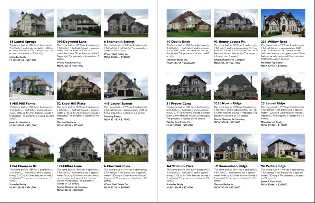
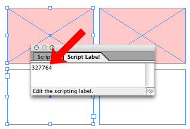
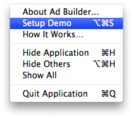
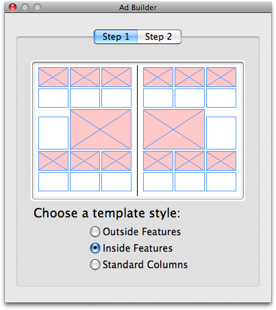
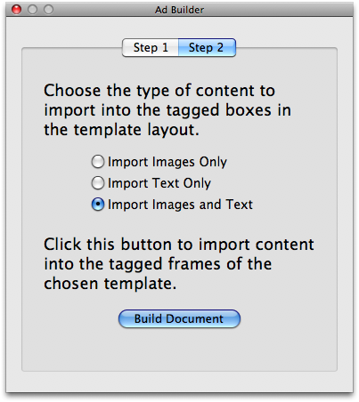

Database Publishing Demo
The Ad Builder application, created using AppleScript Studio, demonstrates how the construction of a Real Estate catalog can be automated by controlling multiple third-party applications with AppleScript.
This publishing example links tagged text and graphic frames in an Adobe InDesign catalog template to corresponding images and text in Microsoft Expression Media and FileMaker Pro databases. This technique is a standard method used in professional automated database publishing workflows.

How it Works
The technique of tagged container publishing relies on a unique identifier existing in both the data sources and the target layout template. The unique identifer can be a product SKU number, a customer number, an address, or even a name, as long as it is unique to each entry record in the source database files. It the Ad Builder example, the MLS (Multiple Listing Service) number assigned to each of the real estate properties is used as the unique identifer.
In the FileMaker Pro database, the MLS number is the contents of the MLS Number field in the Listings Database:

In Expression Media, the MLS number begins the name of the related images in the database file:

To enable the automation of extracting and placing image and text data into a layout, text and graphic frames in an Abode InDesign template are tagged with MLS numbers using the Script Label pallette:

Once a template has been tagged, launch the Ad Builder application. From its application menu, select Setup Demo to have the application automatically launch Expression Media and FileMaker Pro, and open the database files used in the demo.

The Ad Builder application will display a completion dialog when the setup is complete. Next, in the Step 1 tab, select the layout design to use.

Next, click the Step 2 tab, and select the option to import both the text and graphics from the releated databases.

Click the Build Document button to begin the automated publishing process. AppleScript scripts will be run that perform the following steps:
- The AppleScript script in the Ad Builder application asks InDesign for a list of references to the text frames in the open template that have a tag assigned to them.
- The script script then iterates the returned list and extracts the tag for each page item in the list of found page items.
- The script then uses the extracted tag to locate a record in the FileMaker Pro database whose MLS Number cell contains the extracted tag.
- The script then extracts the contents of the other cells of the matched FileMaker Pro record and inserts the data into the targeted text frame in the InDesign template. The inserted text is then formatted using stylesheets.
tell application "Adobe InDesign CS3"
activate
tell the active document
try
set the_list to every text frame of every spread whose label is not ""
on error
error "There are no tagged text frames."
end try
end tell
repeat with i from 1 to the number of items in the_list
set this_frame to item i of the_list
tell the active document
set this_identifier to the label of this_frame
end tell
tell application "Runtime"
activate
tell database 1
show (the first record whose cell "MLS Number" contains this_identifier)
set the_data to cell "Ad Text" of the current record
end tell
end tell
tell the active document
set the contents of this_frame to the_data
tell this_frame
tell paragraph 1
set applied font to "Gill Sans"
set font style to "Bold"
set point size to 12.0
set leading to 12.0
end tell
tell paragraph 2
set space before to 0.167
set applied font to "Gill Sans"
set font style to "Light"
set point size to 10.0
set leading to 11.0
end tell
tell paragraph 3
set space before to 0.167
set applied font to "Gill Sans"
set font style to "Regular"
set point size to 10.0
set leading to 12.0
end tell
tell paragraph 4
set applied font to "Gill Sans"
set font style to "Regular"
set point size to 10.0
set leading to 12.0
end tell
end tell
end tell
end repeat
end tell
- The AppleScript script in the Ad Builder application asks InDesign for a list of references to the graphic frames in the open template that have a tag assigned to them.
- Then the script extracts and uses the tag to locate an image in the Expression Media database whose name begins with the extracted tag.
- The script then imports the image into the target graphic frame and sizes the image to fit the frame appropriately.
tell application "Adobe InDesign CS3"
tell the active document
set the rectangle_list to every rectangle of every spread ¬
whose label is not "" and content type is graphic type
if the rectangle_list is {} then
error "There are no tagged image rectangles."
end if
if the class of the rectangle_list is not list then
set the rectangle_list to the rectangle_list as list
end if
end tell
repeat with i from 1 to the count of the rectangle_list
try
set error_indicator to 1
set this_rectangle to item i of the rectangle_list
set this_tag to the label of this_rectangle
tell application "Expression Media"
set this_image to (the path of first media item of the front catalog ¬
whose name begins with this_tag)
select (first media item of the front catalog whose name begins with this_tag)
end tell
set error_indicator to 2
tell this_rectangle
set this_image to place this_image
if the class of this_image is list then set this_image to item 1 of this_image
fit given content to frame
set image_h to the horizontal scale of this_image
set the image_v to the vertical scale of this_image
if the image_v is greater than or equal to image_h then
set horizontal scale of this_image to image_v
else
set the vertical scale of this_image to image_h
end if
fit given center content
set color value of the fill color to {255, 255, 255}
end tell
on error error_message
if the error_indicator is 1 then
set the error_message to "Image “" & this_tag & ¬
"” could not be found in the database."
end if
activate
beep
display dialog error_message buttons {"Cancel", "Continue"} default button 2
end try
end repeat
end tell
This process is repeated until all the tagged page items have been filled. That's all there is to it!
Download
NOTE: this demo requires Mac OS X Leopard, Adobe InDesign CS3, FileMaker Pro 7 or higher, and Microsoft Expression Media (available separately or included in the Media Edition of Microsoft Office 2008).
You may download the Ad Builder demo application here.